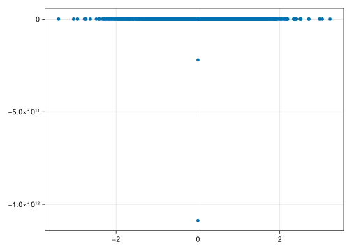

using CSV, DataFrames
using Random
using StatsBase, Distributions
using CairoMakie25 Scenario Generation
[Drafting note: based on some examples. Needs to be revised with more exposition.]
25.1 In This Chapter
How to generate synthetic data for your model using sub-models, with applications to economic scenario generation and portfolio composition.
25.2 Setup
25.3 The Data
25.4 Pseudo Random Number Generators
Modern computers utilize Pseudo random number generators (PRNGs) to generate random-like numbers. PRNGs are algorithms used to generate sequences of numbers that appear to be random but are actually determined by an initial value, known as the seed. These generators are called “pseudo-random” because the sequences they produce are deterministic; if you provide the same seed, you’ll get the same sequence of numbers. In addition, they have a finite period, which means that after a certain number of generated values, the sequence will repeat. It’s important to choose or design PRNGs with a long enough period for practical applications.
25.4.1 Common PRNGs
25.4.1.1 Mersenne Twister
One of the strengths of the Mersenne Twister is its exceptionally long period. The period is \(2^(19937)-1\), which means it can generate \(2^(19937)-1\) pseudo random numbers before repeating. This long period is crucial for applications requiring a large number of independent random numbers. It is also known for its good statistical properties. It passes many standard tests for randomness and provides a relatively uniform distribution of random numbers. Moreover, it is designed to allow multiple independent instances to be used concurrently without interfering with each other. This makes it suitable for parallel computing. Although there are faster generators for specific use cases, the Mersenne Twister is still often favored for its balance between speed and quality.
25.4.1.2 Xorshift
Xorshift is a family of PRNGs known for their simplicity and relatively fast operation. The name “xorshift” comes from the bitwise XOR (exclusive or) and bit-shifting operations that are the core of the algorithm. Xorshift generators are often used in applications where speed is a priority and cryptographic-strength randomness is not a strict requirement. Xorshift PRNGs use bitwise XOR, left shifts, and right shifts to update the internal state and generate pseudo-random numbers. The basic idea is to repeatedly apply these operations to the state to produce a sequence of numbers. The period of a typical xorshift generator is relatively short compared to some other PRNGs like the Mersenne Twister. However, there are variations of xorshift algorithms that can have longer periods. One of the main advantages of xorshift is its simplicity and speed. The bitwise XOR and bit-shifting operations can be efficiently implemented in hardware, making xorshift generators suitable for applications where fast random number generation is crucial.
25.4.1.3 Xoshiro
Xoshiro is a family of PRNGs known for their high performance and good statistical properties. The name “Xoshiro” is derived from the Japanese word “xoroshiro,” meaning “random.” Xoshiro algorithms, including Xoshiro128 and others, use a combination of bitwise XOR, bit-shifting, and addition operations. They often have more complex update rules than basic Xorshift algorithms. In addition, they typically have longer periods, making them suitable for applications that require more pseudo-random numbers before repetition.
25.4.2 Consistent Interface
Julia offers a consistent interface for random numbers due to its design and multiple dispatch principles. Consider the following random numbers in different data types.
rng = MersenneTwister(1234)
rand(Int, (2, 3))2×3 Matrix{Int64}:
333499284049972711 -3924853708561054122 7437691801511794024
-6342670191919156860 5305679979432995991 -7534507516845369928rng = MersenneTwister(1234)
rand(Float64, (2, 3))2×3 Matrix{Float64}:
0.801096 0.734764 0.933132
0.854073 0.308949 0.833287rng = Xoshiro(1234)
rand(Bool, (2, 3))2×3 Matrix{Bool}:
1 1 1
0 1 125.5 Common Economic Scenario Generation Approaches
Economic scenario generation involves the development of plausible future economic scenarios to assess the potential impact on financial portfolios, investments, or decision-making processes. Various approaches are used to generate economic scenarios, including stochastic differential equations (SDEs) and Monte Carlo simulations.
25.5.1 Interest Rate Models
25.5.1.1 Vasicek and Cox Ingersoll Ross (CIR)
The Vasicek model is a one-factor model commonly used for simulating interest rate scenarios. It describes the dynamics of short-term interest rates using a stochastic differential equation (SDE). In a Monte Carlo simulation, we can use the Vasicek model to generate multiple interest rate paths. The CIR model is an extension of the Vasicek model with non-constant volatility. It addresses the issue of negative interest rates by ensuring that interest rates remain positive. Vasicek is defined as
\[ dr(t) = \kappa (\theta - r(t)) \, dt + \sigma \, dW(t) \]
where
- \(r(t)\) is the short-term interest rate at time \(t\).
- \(κ\) is the speed of mean reversion, representing how quickly the interest rate reverts to its long-term mean.
- \(θ\) is the long-term mean or equilibrium level of the interest rate.
- \(σ\) is the volatility of the interest rate.
- \(dW(t)\) is a Wiener process or Brownian motion, representing a random shock.
And CIR is defined as
\[ dr(t) = \kappa (\theta - r(t)) \, dt + \sigma \sqrt{r(t)} \, dW(t) \]
where
- \(r(t)\) is the short-term interest rate at time \(t\).
- \(κ\) is the speed of mean reversion, representing how quickly the interest rate reverts to its long-term mean.
- \(θ\) is the long-term mean or equilibrium level of the interest rate.
- \(σ\) is the volatility of the interest rate.
- \(dW(t)\) is a Wiener process or Brownian motion, representing a random shock.
The following code shows a simplified implementation of a CIR model. The specification of \(dr\) can be changed to become a Vasicek model.
# Set seed for reproducibility
Random.seed!(1234)
# CIR model parameters
κ = 0.2 # Speed of mean reversion
θ = 0.05 # Long-term mean
σ = 0.1 # Volatility
# Initial short-term interest rate
r₀ = 0.03
# Number of time steps and simulations
num_steps = 252
num_simulations = 1_000
# Time increment
Δt = 1 / 252
# Function to simulate CIR process
function cir_simulation(κ, θ, σ, r₀, Δt, num_steps, num_simulations)
interest_rate_paths = zeros(num_steps, num_simulations)
for j in 1:num_simulations
interest_rate_paths[1, j] = r₀
for i in 2:num_steps
dW = randn() * sqrt(Δt)
# for Vasicek
# dr = κ * (θ - interest_rate_paths[i-1, j]) * Δt + σ * dW
dr = κ * (θ - interest_rate_paths[i-1, j]) * Δt + σ * sqrt(interest_rate_paths[i-1, j]) * dW
interest_rate_paths[i, j] = max(interest_rate_paths[i-1, j] + dr, 0) # Ensure non-negativity
end
end
return interest_rate_paths
end
# Run CIR simulation
cir_paths = cir_simulation(κ, θ, σ, r₀, Δt, num_steps, num_simulations)
# Plot the simulated interest rate paths
f = Figure()
Axis(f[1, 1])
for i in 1:num_simulations
lines!(1:num_steps, cir_paths[:, i])
end
f┌ Warning: Found `resolution` in the theme when creating a `Scene`. The `resolution` keyword for `Scene`s and `Figure`s has been deprecated. Use `Figure(; size = ...` or `Scene(; size = ...)` instead, which better reflects that this is a unitless size and not a pixel resolution. The key could also come from `set_theme!` calls or related theming functions.
└ @ Makie ~/.julia/packages/Makie/GtFuI/src/scenes.jl:227
25.5.1.2 Hull White
The Hull-White model is a one-factor model that extends the Vasicek model by allowing the mean reversion and volatility parameters to be time-dependent. It is commonly used for pricing interest rate derivatives. Brace-Gatarek-Musiela (BGM) Model extends the Hull-White model to incorporate more factors. It is one of the Libor Market Model (LMM) that describes the evolution of forward rates. It allows for the modeling of both the short-rate and the entire yield curve. It is defined as
\[ dr(t) = (\theta(t) - a r(t)) \, dt + \sigma(t) \, dW(t) \]
where
- \(r(t)\) is the short-term interest rate at time \(t\).
- \(θ\) is the long-term mean or equilibrium level of the interest rate.
- \(a\) is the speed of mean reversion.
- \(σ(t)\) is the time-dependent volatility of the interest rate.
- \(dW(t)\) is a Wiener process or Brownian motion, representing a random shock.
# Set seed for reproducibility
Random.seed!(1234)
# Hull-White model parameters
α = 0.1 # Mean reversion speed
σ = 0.02 # Volatility
r₀ = 0.03 # Initial short-term interest rate
# Number of time steps and simulations
num_steps = 252
num_simulations = 1_000
# Time increment
Δt = 1 / 252
# Function to simulate Hull-White process
function hull_white_simulation(α, σ, r₀, Δt, num_steps, num_simulations)
interest_rate_paths = zeros(num_steps, num_simulations)
for j in 1:num_simulations
interest_rate_paths[1, j] = r₀
for i in 2:num_steps
dW = randn() * sqrt(Δt)
dr = α * (σ - interest_rate_paths[i-1, j]) * Δt + σ * dW
interest_rate_paths[i, j] = interest_rate_paths[i-1, j] + dr
end
end
return interest_rate_paths
end
# Run Hull-White simulation
hull_white_paths = hull_white_simulation(α, σ, r₀, Δt, num_steps, num_simulations)
# Plot the simulated interest rate paths
f = Figure()
Axis(f[1, 1])
for i in 1:num_simulations
lines!(1:num_steps, hull_white_paths[:, i])
end
f┌ Warning: Found `resolution` in the theme when creating a `Scene`. The `resolution` keyword for `Scene`s and `Figure`s has been deprecated. Use `Figure(; size = ...` or `Scene(; size = ...)` instead, which better reflects that this is a unitless size and not a pixel resolution. The key could also come from `set_theme!` calls or related theming functions.
└ @ Makie ~/.julia/packages/Makie/GtFuI/src/scenes.jl:227
25.5.2 Stock Models
25.5.2.1 Geometric Brownian Motion (GBM)
GBM is a stochastic process commonly used to model the price movement of financial instruments, including stocks. It assumes constant volatility and is characterized by a log-normal distribution. It is defined as
\[ dS(t) = \mu S(t) \, dt + \sigma S(t) \, dW(t) \]
where
- \(S(t)\) is the stock price at time \(t\).
- \(μ\) is the drift coefficient (expected return).
- \(σ\) is the volatility coefficient.
- \(dW(t)\) is a Wiener process or Brownian motion, representing a random shock.
# Set seed for reproducibility
Random.seed!(1234)
# GBM parameters
μ = 0.05 # Drift (expected return)
σ = 0.2 # Volatility
# Initial stock price
S₀ = 100
# Number of time steps and simulations
num_steps = 252
num_simulations = 1_000
# Time increment
Δt = 1 / 252
# Function to simulate GBM
function gbm_simulation(μ, σ, S₀, Δt, num_steps, num_simulations)
stock_price_paths = zeros(num_steps, num_simulations)
for j in 1:num_simulations
stock_price_paths[1, j] = S₀
for i in 2:num_steps
dW = randn() * sqrt(Δt)
dS = μ * S₀ * Δt + σ * S₀ * dW
stock_price_paths[i, j] = stock_price_paths[i-1, j] + dS
end
end
return stock_price_paths
end
# Run GBM simulation
gbm_paths = gbm_simulation(μ, σ, S₀, Δt, num_steps, num_simulations)
# Plot the simulated stock price paths
f = Figure()
Axis(f[1, 1])
for i in 1:num_simulations
lines!(1:num_steps, gbm_paths[:, i])
end
f┌ Warning: Found `resolution` in the theme when creating a `Scene`. The `resolution` keyword for `Scene`s and `Figure`s has been deprecated. Use `Figure(; size = ...` or `Scene(; size = ...)` instead, which better reflects that this is a unitless size and not a pixel resolution. The key could also come from `set_theme!` calls or related theming functions.
└ @ Makie ~/.julia/packages/Makie/GtFuI/src/scenes.jl:227
25.5.2.2 Generalized Autoregressive Conditional Heteroskedasticity (GARCH)
GARCH models capture time-varying volatility. They are often used in conjunction with other models to forecast volatility. It is defined as
\[ \sigma^2_t = \omega + \alpha_1 r^2_{t-1} + \beta_1 \sigma^2_{t-1} \]
\[ r_t = \varepsilon_t \sqrt{\sigma^2_t} \]
- \(σ^2_t\) is the conditional variance at time \(t\)
- \(r_t\) is the return at time \(t\)
- \(\varepsilon_t\) is a white noise or innovation process
- \(\omega\), \(\alpha_1\), \(\beta_1\) are model parameters
# Set seed for reproducibility
Random.seed!(1234)
# GARCH(1,1) parameters
α₀ = 0.01 # Constant term
α₁ = 0.1 # Coefficient for lagged squared returns
β₁ = 0.8 # Coefficient for lagged conditional volatility
# Number of time steps and simulations
num_steps = 252
num_simulations = 1_000
# Time increment
Δt = 1 / 252
# Function to simulate GARCH(1,1) volatility
function garch_simulation(α₀, α₁, β₁, num_steps, num_simulations)
volatility_paths = zeros(num_steps, num_simulations)
for j in 1:num_simulations
ε = randn(num_steps)
squared_returns = zeros(num_steps)
for i in 2:num_steps
squared_returns[i] = α₀ + α₁ * ε[i-1]^2 + β₁ * squared_returns[i-1]
volatility_paths[i, j] = sqrt(squared_returns[i])
end
end
return volatility_paths
end
# Run GARCH simulation
garch_paths = garch_simulation(α₀, α₁, β₁, num_steps, num_simulations)
# Plot the simulated volatility paths
f = Figure()
Axis(f[1, 1])
for i in 1:num_simulations
lines!(1:num_steps, garch_paths[:, i])
end
f┌ Warning: Found `resolution` in the theme when creating a `Scene`. The `resolution` keyword for `Scene`s and `Figure`s has been deprecated. Use `Figure(; size = ...` or `Scene(; size = ...)` instead, which better reflects that this is a unitless size and not a pixel resolution. The key could also come from `set_theme!` calls or related theming functions.
└ @ Makie ~/.julia/packages/Makie/GtFuI/src/scenes.jl:227
25.5.3 Copulas
Simulating data using copulas involves generating multivariate samples with specified marginal distributions and a copula structure.
# Set seed for reproducibility
Random.seed!(1234)
# Marginal distributions (e.g., normal)
marginal1 = Normal(0, 1)
marginal2 = Normal(0, 1)
# Clayton copula parameters
theta = 0.5
# Number of data points
num_points = 1000
# Generate independent samples from marginals
u1 = rand(marginal1, num_points)
u2 = rand(marginal2, num_points)
# Clayton copula simulation
function clayton_copula_simulation(u1, u2, theta)
v1 = u1
v2 = u2 .* ((theta .* u1) .^ (-1 / theta - 1))
return v1, v2
end
# Simulate Clayton copula
v1, v2 = clayton_copula_simulation(u1, u2, theta)
# Plot the simulated bivariate data
f = Figure()
Axis(f[1, 1])
scatter!(v1, v2)
f┌ Warning: Found `resolution` in the theme when creating a `Scene`. The `resolution` keyword for `Scene`s and `Figure`s has been deprecated. Use `Figure(; size = ...` or `Scene(; size = ...)` instead, which better reflects that this is a unitless size and not a pixel resolution. The key could also come from `set_theme!` calls or related theming functions.
└ @ Makie ~/.julia/packages/Makie/GtFuI/src/scenes.jl:227